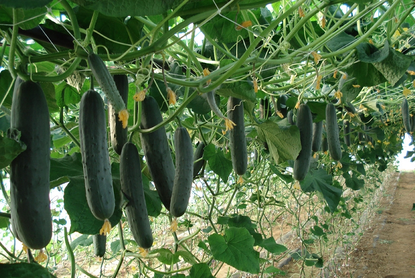

Le concombre est un légume frais et croquant, souvent apprécié pour sa texture rafraîchissante et son goût subtil. Originaire d'Inde, il est cultivé dans de nombreuses régions du monde. Avec sa peau verte et sa chair aqueuse, le concombre est une excellente source d'hydratation. Il est également faible en calories et riche en fibres, ce qui en fait un aliment sain et nourrissant. Que ce soit dans une salade estivale, en accompagnement d'une trempette ou même simplement tranché pour une collation légère, le concombre est polyvalent et délicieux dans de nombreuses préparations culinaires.
